🎬 AI in Broadcasting
AI-driven editing tools, automated QC, intelligent MAM, colour grading.

Dynamic Media Facilities (DMF): The Future of Flexible Broadcast Infrastructure
Dynamic Media Facilities explained — what it is, how it works, and why it became a key topic at NAB Show 2026 for modern broadcast infrastructure.
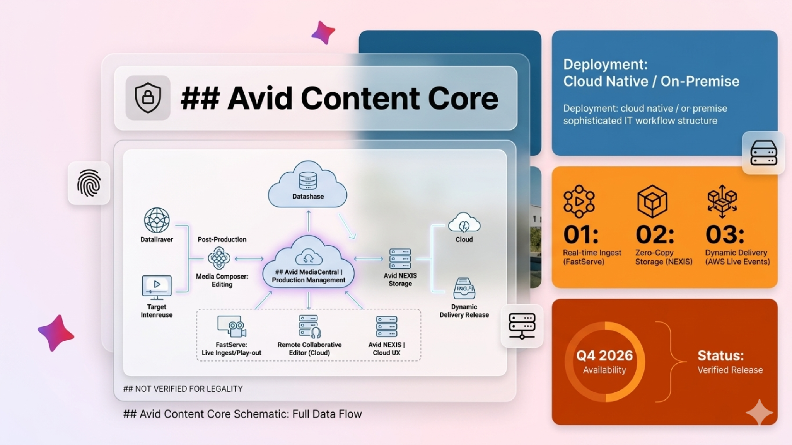
Avid and Google Cloud Partner to Deliver Agentic AI to Media Production
Avid integrates Google Gemini and Vertex AI into Media Composer and Content Core, enabling agentic AI workflows for post-production teams.
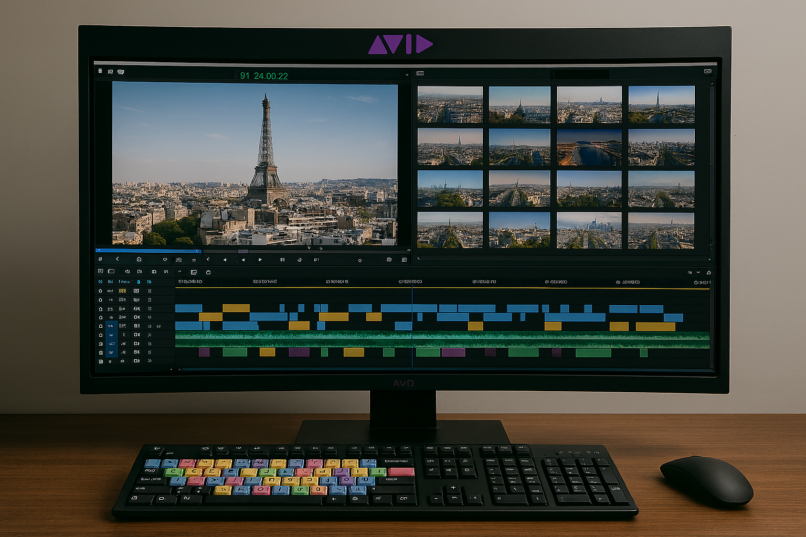
Blackmagic Design Launches DaVinci Resolve 21 at NAB 2026
DaVinci Resolve 21 launches alongside new hardware at NAB 2026, continuing Blackmagic's approach of bundling professional tools with accessible pricing.
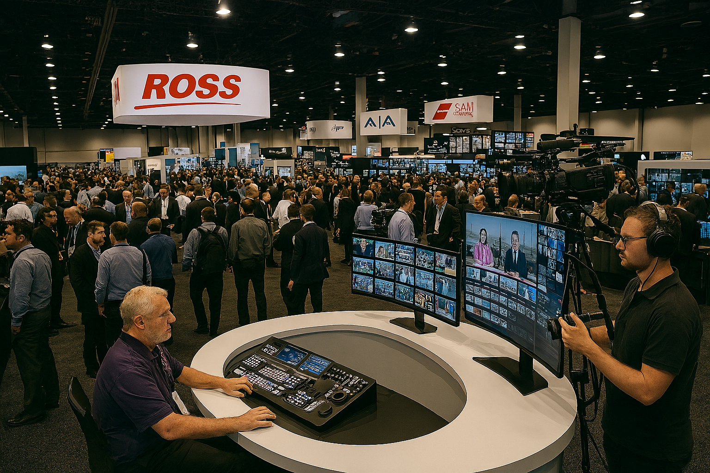
Haivision Falkon X4: Four-Modem 5G Contribution for Live Sports and News
Haivision's Falkon X4 brings four independent cellular modems with eight antennas to mobile live production, targeting sports and news contribution.
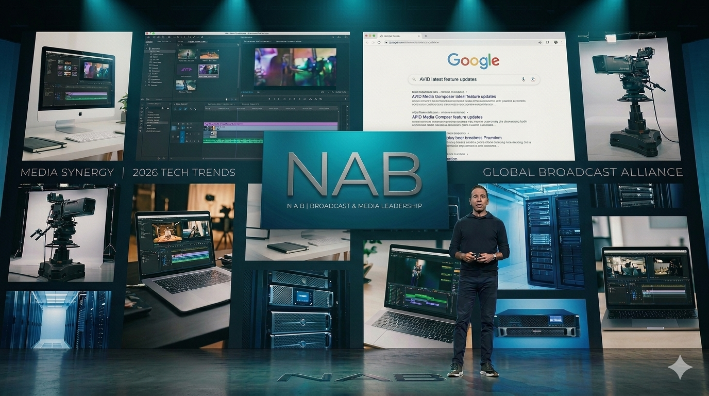
NAB 2026 Preview: What Broadcast Engineers Should Be Watching This Week
NAB Show 2026 opens this week. From Avid's agentic AI partnership with Google Cloud to Harmonic's IP playout push — here's what engineers should watch.
Haivision Makito ONE: Multi-Codec Encoding and Decoding on a Single Blade
Haivision's Makito ONE consolidates H.264, HEVC, and AVC encoding and decoding onto a single blade, simplifying contribution infrastructure for broadcasters.
Bitcentral to Showcase Connected Media Workflows at NAB 2026
Bitcentral will demonstrate connected media workflows at NAB 2026, highlighting integrations between newsroom, production, and distribution systems.
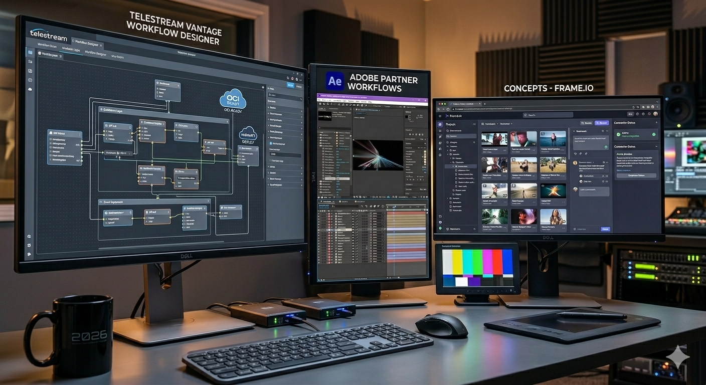
Telestream, Adobe and Frame.io: Why Creative-to-Delivery Automation Is Becoming a Core Broadcast Workflow
Telestream OCI integration with Adobe Premiere and Frame.io signals a new era of creative-to-delivery automation that removes manual handoff steps.
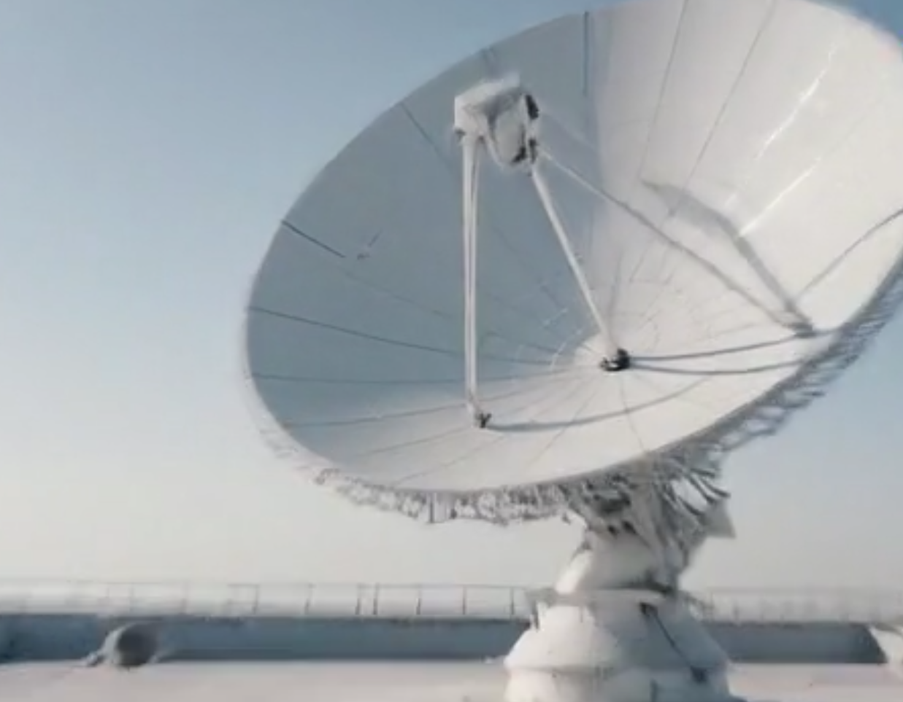
Frame.io and Workfront: How AI-Assisted Review Is Changing Broadcast Approval Workflows
Adobe's Frame.io V4 and Workfront integration brings AI-assisted review and approval to broadcast post workflows, reducing turnaround time significantly.
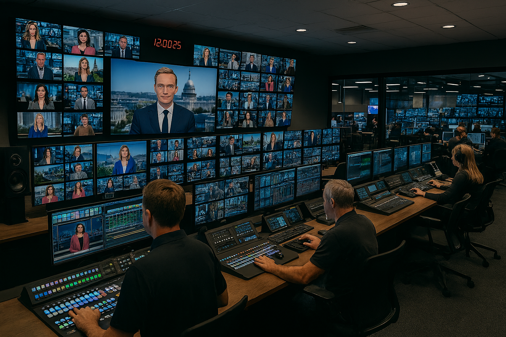
Vizrt Viz One: AI Metadata and the New Archive Strategy for Newsrooms
Vizrt's Viz One AI metadata capabilities are reshaping how newsrooms manage archives, enabling faster search, retrieval, and content repurposing.
EditShare Analytical AI and MediaSilo at NAB 2026
EditShare brings analytical AI to MediaSilo at NAB 2026, adding intelligent search, tagging, and workflow automation to collaborative media management.
Dalet Flex 25.12 and Dalia AI: Semantic Search Comes to Broadcast MAM
Dalet Flex 25.12 introduces Dalia AI with semantic search capabilities, transforming how broadcast teams find and repurpose content inside the MAM.
Tedial Agentic AI: Automating the Full Media Lifecycle at NAB 2026
Tedial demonstrates agentic AI that automates media lifecycle tasks from ingest to distribution, reducing operator workload in broadcast operations.

Harmonic Spectrum X+: The Economics of Software-Defined Playout in 2026
Harmonic's Spectrum X+ reframes the playout economics debate — software-defined infrastructure is no longer a compromise on reliability or cost.
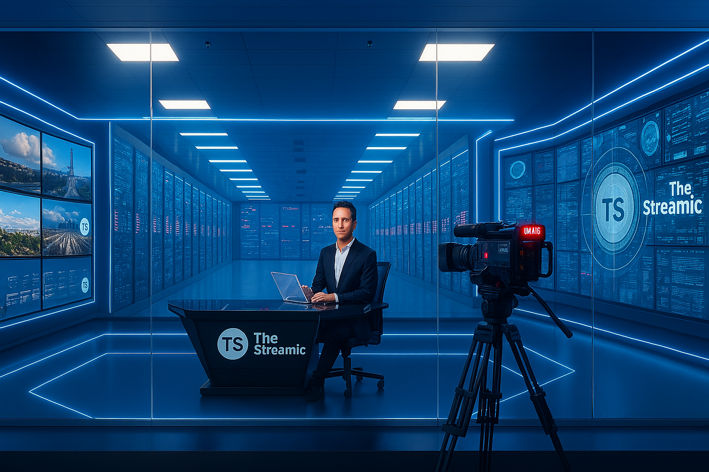
Pebble Future-Ready Playout: What NAB 2026 Reveals About the Next Decade
Pebble's NAB 2026 presence signals a clear direction: open, interoperable playout platforms built for hybrid IP and cloud-native broadcast operations.
Aveco Rundown Designer: Studio Automation Without an NRCS
Aveco's Rundown Designer enables studio automation to operate independently of a traditional NRCS, lowering the barrier for smaller broadcast operations.

SMPTE ST 2110 and AI Media at NAB 2026: The Infrastructure Layer Is Catching Up
SMPTE ST 2110 infrastructure is evolving to support AI-driven media workflows — NAB 2026 shows how the network layer is finally catching up with software.
Telestream Vantage and Adobe Premiere: Workflow Integration for Broadcast Teams
Telestream Vantage and Adobe Premiere integration delivers a direct creative-to-delivery pipeline, reducing manual steps in broadcast post workflows.
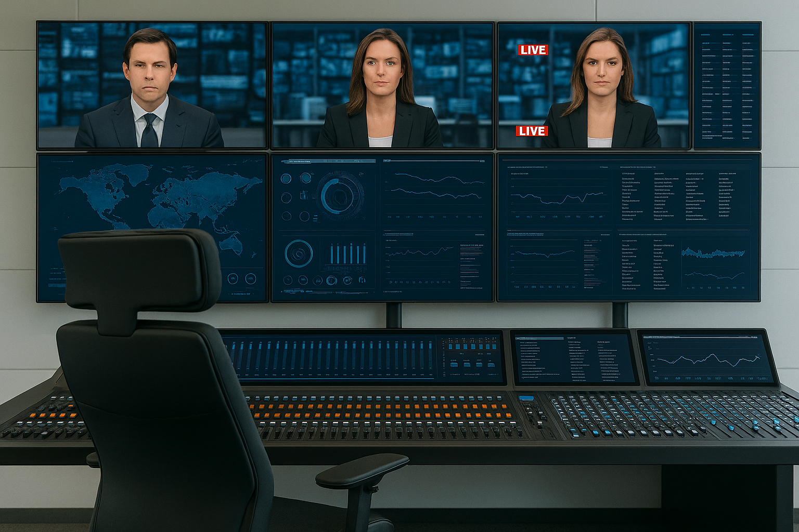
The Future of AI in Broadcast Deployment
A strategic look at how AI deployment in broadcast is shifting from experimentation to production — and what that means for engineering teams in 2026.
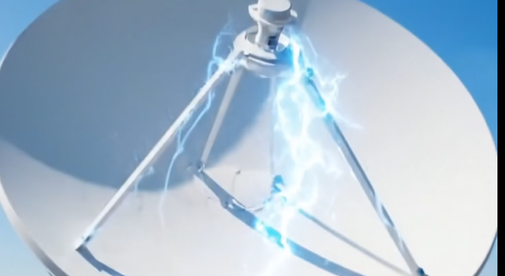
Cloud-Based Broadcast Workflows: Remote Production and Virtualization in 2026
How cloud-based broadcast workflows and virtualization are reshaping remote production — covering architecture, latency, and real-world deployment patterns.
AI in Video Post-Production: Editing, VFX, and Automation in 2026
AI tools are reshaping video post-production — from intelligent editing assistants to automated VFX workflows and quality-control pipelines.
IP-Based Broadcasting and SMPTE ST 2110: Complete Engineering Guide for 2026
A comprehensive engineering guide to IP-based broadcasting and SMPTE ST 2110, covering architecture, timing, redundancy, and practical migration strategy.
Media Asset Management (MAM) in the AI Era: Smarter Content and Faster Monetisation
How AI is transforming MAM platforms — from metadata enrichment and search to automated rights management and accelerated content monetisation.
Live Production AI Automation and Real-Time Broadcasting in 2026
AI automation is entering live production — from camera control and replay to real-time graphics and multi-platform distribution workflows.
The Complete Guide to Broadcast Automation Systems in 2026
Everything broadcast engineers need to know about automation systems in 2026 — architecture, vendor landscape, playout, and integration patterns.
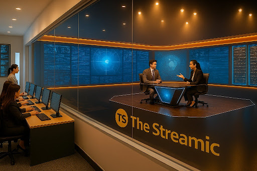
How AI Is Reducing Broadcast Operational Costs in 2026
A strategic editorial analysis of how AI is driving real operational cost reductions in broadcast — from automated QC to intelligent resource scheduling.
IP Transition 2026: A Practical Guide for Broadcast Engineers
A practical engineering guide to navigating the IP transition in 2026 — SDI migration, NMOS implementation, and real-world lessons from early adopters.

Cloud Playout Economics in 2026: Build vs Buy
The build vs buy decision for cloud playout in 2026 — TCO analysis, operational trade-offs, and what the vendor landscape actually looks like.
Beyond the Chatbot: Operational AI in the Newsroom
Operational AI in the newsroom goes well beyond chat interfaces — how AI is being deployed for ingest routing, metadata, QC, and distribution decisions.
ST 2110 for Small-Market and Hybrid IP Broadcasters in 2026
SMPTE ST 2110 is no longer just for large broadcasters — how small-market and hybrid IP facilities are adopting the standard practically and affordably.
C2PA, Deepfakes, and News Credibility: Digital Provenance in 2026
How the C2PA standard for digital content provenance is becoming critical infrastructure for broadcast newsrooms fighting deepfakes and misinformation.
Green Broadcast: Cloud Carbon Footprint and Sustainability in 2026
Broadcast's cloud carbon footprint is growing — how media organisations are measuring, reporting, and reducing the environmental impact of cloud production.